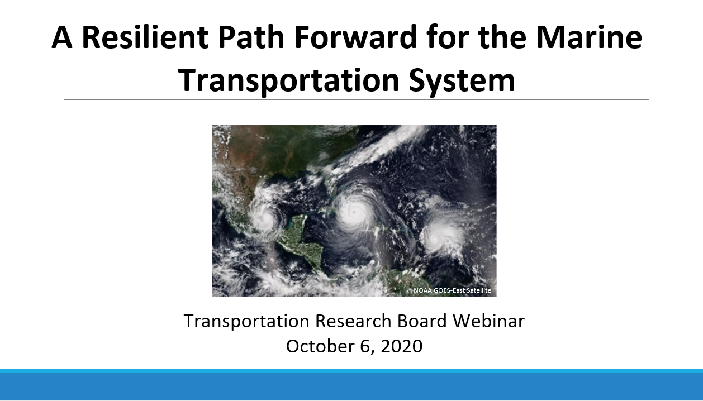

CMTS RIAT Transportation Research Board Webinar: Event Recap
Posted On: October 1, 2020
On October 6th 2020 the U.S. Committee on the Marine Transportation System’s (CMTS) Resilience Integrated Action Team (RIAT) presented a Transportation Research Board (TRB) webinar titled A Resilient Path Forward for the Marine Transportation System (https://webinar.mytrb.org/Webinars/Details/1425).
The objectives of the webinar were to discuss broad challenges, practices, and successes of hurricane resilience; identify whether challenges have been addressed between hurricane seasons; and determine how to use data and communication to become more resilient. The presentation discussed the response and recovery efforts that were done to better prepare between the 2017-2019 hurricane seasons and identify and prioritize recommendations to minimize the impact from future storms and other disruptive events. The webinar had 85 attendees from diverse backgrounds including universities, various State Department of Transportation Offices, MARAD, USACE, BSEE, NOAA, USCG, EPA, and FHWA. The presentation was well received, and the audience asked thought provoking questions during the Q&A session. Thank you to the RIAT co-leads and team for all their work and dedication and thank you to TRB for organizing and hosting the webinar.

CMTS-AAPA Infrastructure Panel: Event Recap
Posted On: October 1, 2020
On October 6th 2020 the U.S. Committee on the Marine Transportation System’s (CMTS) Resilience Integrated Action Team (RIAT) presented a Transportation Research Board (TRB) webinar titled A Resilient Path Forward for the Marine Transportation System (https://webinar.mytrb.org/Webinars/Details/1425).
On Wednesday, September 16, the CMTS and American Association of Port Authorities (AAPA) held a moderated panel discussion, Accelerate the MTS, highlighting the importance of infrastructure to the Marine Transportation System.
Panelists included Guy St. John, Apprenticeship Program Manager at Oceaneering, who discussed workforce training in support of the MTS; Jeff Pollack, Chief Strategy Officer at the Port of Corpus Christi, who discussed emerging technologies and technology infrastructure; Ron Horst, Director of Research at Inforum, who discussed infrastructure investment and financing for the MTS; and Katherine Chambers, Research Physical Scientist at U.S. Army Engineer Research and Development Center, who discussed how strong infrastructure supports a resilient MTS. AAPA President and CEO Chris Connor moderated the panel, and CMTS Coordinating Board Chair RDML Richard Timme provided opening remarks and posed insightful questions to the panelists.
For additional information about how infrastructure supports a strong MTS, please contact Chase.Long@cmts.gov.
Now Available: FAST Act Addendum to the Federal Funding Handbook for Marine Transportation System Infrastructure
Posted On: March 4, 2017
The FAST Act Addendum highlights the Department of Transportation's FASTLANE program, which provides dedicated, discretionary funding for projects that address critical freight issues facing our Nation's highways, bridges, railroads, and intermodal infrastructure and establishes broad, multiyear eligibilities for freight infrastructure. Please forward any questions or comments regarding the report to the CMTS at CMTS@dot.gov or (202) 366-3612.
CMTS Webinar: Federal Arctic MTS Activities Update
Over 60 participants joined the CMTS webinar Federal Arctic MTS Activities Update. Presentations were provided by Mr. Eric Cooper, Director, Arctic Region Policy, National Security Council, White House, regarding the recent Presidential Executive Order on the Arctic; CAPT John Mauger, Chief, Office of Design and Engineering Standards, USCG, regarding the IMO Polar Code; and Dr. Alyson Azzara, ICCT, and Mr. Gary Magnuson, CMTS, regarding the CMTS Ten-Year Projection of Maritime Activity in the US Arctic. View the presentations by CAPT Mauger and the CMTS by clicking the links below.